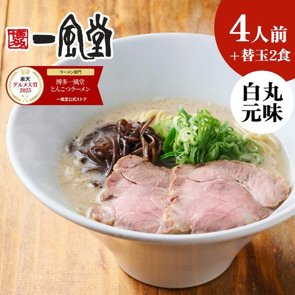
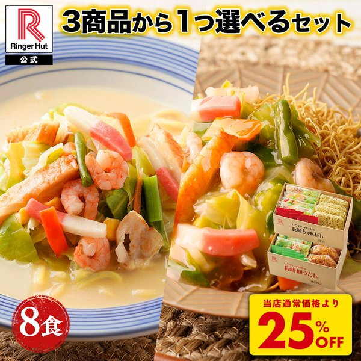
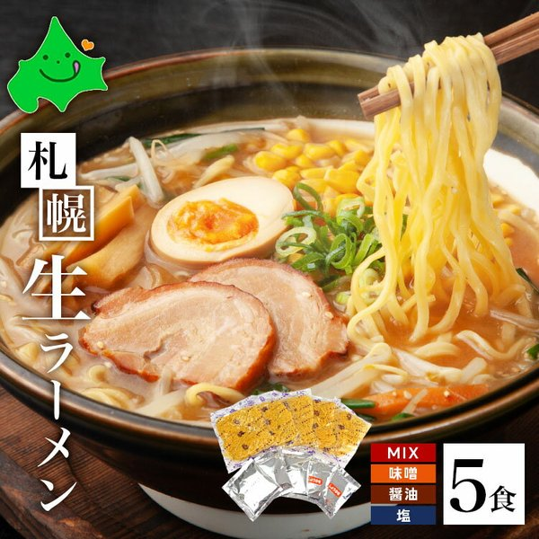
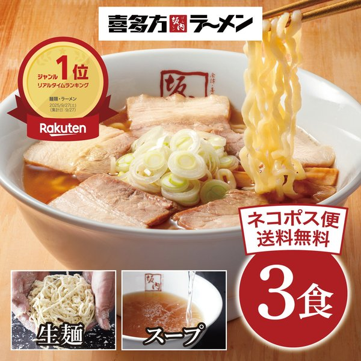
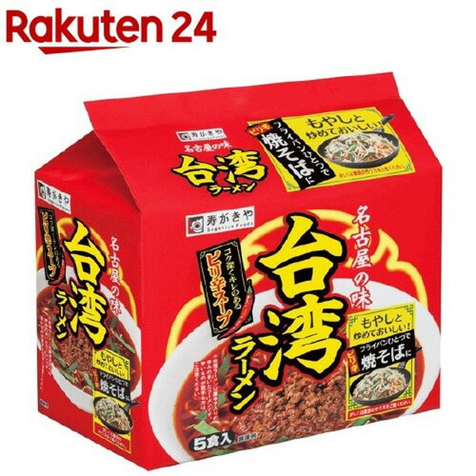
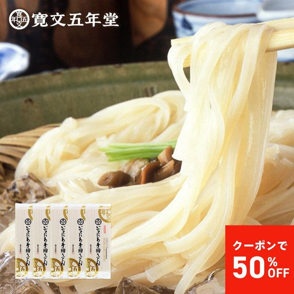
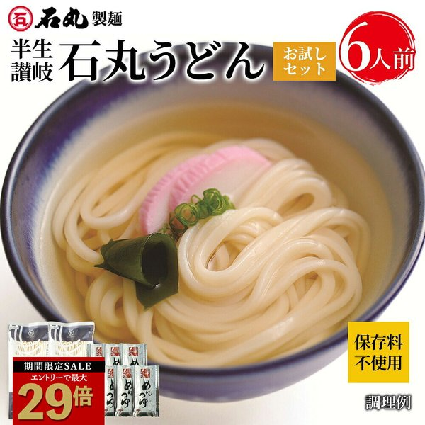
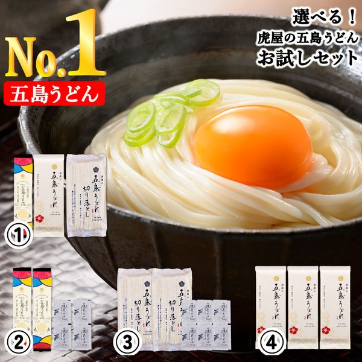
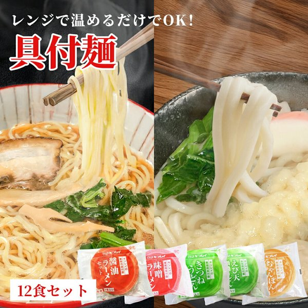
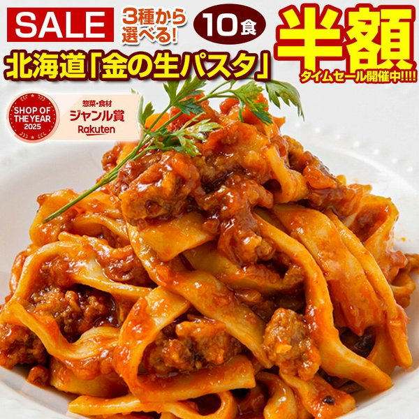

【2026年・お取り寄せ麺】ご当地ラーメン・讃岐うどん・稲庭うどん・生パスタ食べ比べ10選｜博多とんこつ・長崎ちゃんぽん・喜多方も
冬の家ごはんは、鍋や煮込みに偏りがちです。たまに「麺だけ」の日があると、献立を考える負担が減ります。お取り寄せの麺は箱で届くので、買い物に行かずに済むのも助かります。
選ぶ軸は3つです。ラーメンはスープの系統で選ぶ。豚骨・味噌・醤油の3系統を1つずつ持っておくと、気分で選べます。うどんは乾麺か半生か。乾麺は日持ちしてストック向き、半生は食感がいいかわりに早めに食べ切ります。パスタは生麺を選ぶと、ゆで時間が短く平日の夕食でも作りやすい。どの麺も、1食あたりの単価と賞味期限を並べてから決めると、買いすぎを防げます。
本記事では、楽天市場で人気・高評価のご当地ラーメンとうどん10選を、実売価格とレビュー評価つきで写真付き紹介します。
- おすすめ10選 スペック・特徴比較表
- BEST 1｜ラーメン お取り寄せセット（2〜4食・選べる）
- BEST 2｜長崎ちゃんぽん・皿うどん 選べる8食セット
- BEST 3｜札幌生ラーメン 5食セット（味噌・醤油・塩）
- BEST 4｜おうちラーメン 3食セット（150g平打ち生麺）
- BEST 5｜台湾ラーメン 5食入
- BEST 6｜稲庭うどん 160g×5袋
- BEST 7｜半生讃岐うどん お試しセット（2袋6人前・めんつゆ付）
- BEST 8｜五島うどん 選べるお試しセット（焼あごだし付）
- BEST 9｜冷凍具付麺 12個入（全5種類）
- BEST 10｜生パスタ 10食セット（3種類から選べる）
- 【読者負担0円】買わなくても得する無料サービス
- まとめ：ご当地ラーメンとうどん10選の選び方
| 順位 | 商品名 | ブランド | 最大の特徴・おすすめ理由 | 総合評価 |
|---|---|---|---|---|
| BEST 1 | ラーメン お取り寄せセット（2〜4食・選べる） | 博多一風堂 | 一風堂の豚骨を自宅で | 4.68 |
| BEST 2 | 長崎ちゃんぽん・皿うどん 選べる8食セット | リンガーハット | 8食入りで家族で楽しめる | 4.69 |
| BEST 3 | 札幌生ラーメン 5食セット（味噌・醤油・塩） | さがみ屋製麺 | 生麺でコシがある | 4.60 |
| BEST 4 | おうちラーメン 3食セット（150g平打ち生麺） | 坂内（喜多方ラーメン） | 150gの大盛り平打ち麺 | 4.61 |
| BEST 5 | 台湾ラーメン 5食入 | 寿がきや | 名古屋名物を自宅で | 4.63 |
| BEST 6 | 稲庭うどん 160g×5袋 | 寛文五年堂 | 手延べの稲庭うどん | 4.60 |
| BEST 7 | 半生讃岐うどん お試しセット（2袋6人前・めんつゆ付） | 石丸製麺 | 半生麺でもちもち | 4.71 |
| BEST 8 | 五島うどん 選べるお試しセット（焼あごだし付） | 虎屋（五島うどん） | 五島列島の手延べうどん | 4.71 |
| BEST 9 | 冷凍具付麺 12個入（全5種類） | キンレイ | レンジで温めるだけ | 4.76 |
| BEST 10 | 生パスタ 10食セット（3種類から選べる） | 金の生パスタ（北海道） | 生麺でもちもち | 4.61 |
ラーメン お取り寄せセット（2〜4食・選べる）

博多一風堂のラーメンお取り寄せセットです。白丸元味をはじめ、2〜4食から選べます。乾麺タイプなので常温で長期保存でき、非常食としても使えます。豚骨スープは店の味を再現したもので、替玉まで付くセットもあります。博多豚骨は細麺に合うスープなので、家で作るときも麺のゆで時間を短めにすると店に近づきます。楽天市場での実売価格は約1,000円（2026年11月時点）。
- 一風堂の豚骨を自宅で
- 常温で長期保存できる
- 2〜4食から選べる
- 1,000円前後と手頃なぶん、具は自分で用意する
長崎ちゃんぽん・皿うどん 選べる8食セット

リンガーハットの長崎ちゃんぽんセットです。ちゃんぽん8食、皿うどん8食、または半分ずつの3タイプから選べます。冷凍で届き、スープも付いています。野菜を足せば、店で食べるのと遜色ない一杯になります。ちゃんぽんは野菜をたっぷり食べられるので、野菜不足が気になる日の夕食にも向いています。楽天市場での実売価格は約3,900円（2026年11月時点）。
- 8食入りで家族で楽しめる
- 冷凍でスープ付き
- 3タイプから選べる
- 3,900円と、1食あたり500円前後になる
札幌生ラーメン 5食セット（味噌・醤油・塩）

札幌の製麺所、さがみ屋製麺の生ラーメン5食セットです。味噌・醤油・塩から味を選べます。生麺なので、乾麺より麺の香りとコシが残ります。メール便でポストに届くので、受け取りの手間がありません。北海道のラーメンは味噌が定番ですが、塩もスープの旨みが分かりやすい。まず5食で試して、好みの味を見つけるのがいいです。楽天市場での実売価格は約1,350円（2026年11月時点）。
- 生麺でコシがある
- 味噌・醤油・塩から選べる
- メール便で届く
- 1,350円で、生麺なので賞味期限は短め
おうちラーメン 3食セット（150g平打ち生麺）

喜多方ラーメンの名店、坂内のおうちラーメンです。150gの大盛り平打ちちぢれ麺に、醤油スープが付いた3食セット。多加水の熟成生麺で、もちっとした食感が喜多方らしさです。常温で30日日持ちするので、ストックしておけます。喜多方ラーメンはあっさりした醤油味なので、朝でも食べやすいです。楽天市場での実売価格は約1,380円（2026年11月時点）。
- 150gの大盛り平打ち麺
- 常温で30日日持ち
- 公式店の3食セット
- 1,380円で、あっさり味なので濃い味が好みだと物足りない
台湾ラーメン 5食入

寿がきやの台湾ラーメン5食入りです。名古屋名物の台湾ラーメンは、醤油ベースのスープに挽肉とニラ、唐辛子を効かせた一杯。乾麺タイプで、鍋で煮るだけで作れます。5食入りで851円なので、1食あたり170円ほどです。名古屋出身の人には懐かしい味で、初めての人は辛さ控えめから試すのがおすすめです。楽天市場での実売価格は約851円（2026年11月時点）。
- 名古屋名物を自宅で
- 5食入りで851円
- 乾麺で保存がきく
- レビューは41件と少なく、辛さは好みが分かれる
稲庭うどん 160g×5袋

秋田の稲庭うどん、寛文五年堂の160g×5袋です。手延べ製法で作られた乾麺で、つるっとした喉越しとコシが特徴。稲庭うどんは日本三大うどんのひとつで、温かくても冷たくても食べられます。乾麺なので常温で長期保存でき、ストック食品としても優秀です。薬味とめんつゆがあれば、平日の昼にさっと茹でられます。楽天市場での実売価格は約2,980円（2026年11月時点）。
- 手延べの稲庭うどん
- 常温で長期保存できる
- 5袋入り
- 2,980円で、1袋あたり約600円と高級価格
半生讃岐うどん お試しセット（2袋6人前・めんつゆ付）

香川の製麺所、石丸製麺の半生讃岐うどんです。2袋で6人前、めんつゆ付きの1,000円セット。保存料不使用で、手打ち式の包丁切りです。半生麺なので、乾麺よりもちもちした食感があります。讃岐うどんは茹で時間が短く、8分ほどで食べられます。まず1,000円で試して、気に入ったら大容量に切り替えるのがいいです。楽天市場での実売価格は約1,000円（2026年11月時点）。
- 半生麺でもちもち
- めんつゆ付きで1,000円
- 保存料不使用
- 半生麺なので、乾麺より日持ちは短い
五島うどん 選べるお試しセット（焼あごだし付）

長崎・五島列島の手延べうどん、虎屋の五島うどんです。選べるお試しセットで、焼あごだしのスープが付きます。五島うどんは細めの手延べ麺で、つるっとした喉越し。あごだしの効いたスープは、稲庭うどんや讃岐うどんとはまた違う味わいです。レビュー907件で評価4.71と、まず試すのに向いています。楽天市場での実売価格は約1,250円（2026年11月時点）。
- 五島列島の手延べうどん
- 焼あごだし付き
- レビュー907件・評価4.71
- 1,250円で、セット内容によっては麺の量が少なめ
冷凍具付麺 12個入（全5種類）

キンレイの冷凍具付麺、12個入りです。全5種類から選べ、ラーメンもうどんも入ります。水がいらないタイプなので、電子レンジで温めるだけで食べられます。冷凍庫にストックしておけば、夜遅く帰った日や体調の悪い日でも、温かい麺が5分で用意できます。具まで入っているので、野菜を足せば1食として成立します。楽天市場での実売価格は約4,700円（2026年11月時点）。
- レンジで温めるだけ
- 具付きで12個入り
- 全5種類から選べる
- 4,700円で、1食あたり約390円と冷凍食品としては高め
生パスタ 10食セット（3種類から選べる）

北海道産小麦の生パスタ10食セットです。フェットチーネ・リングイネ・スパゲッティの3種類から選べ、180g×5袋入り。生麺なので、乾麺よりもちもちした食感があります。ゆで時間が短く、平日の夕食でも作りやすい。糖質を控えめにしたタイプなので、主食を軽くしたい日にも選びやすいです。1,000円で10食なので、1食100円とコスパもいい。楽天市場での実売価格は約1,000円（2026年11月時点）。
- 生麺でもちもち
- 3種類から選べる
- 10食1,000円
- 生麺なので冷蔵庫で保存し、早めに食べ切る
この記事の商品を買う前に、まずは無料で得する選択肢をチェック。どれも登録・利用は0円で、無料期間中に解約すれば料金はかかりません。読みたい雑誌がある人、ポイントを貯めたい人、アンケートなら気軽という人、それぞれに合うものを選べます。
初回31日無料・無料期間中に解約すれば0円 → 楽天ポイントモール｜登録無料で毎日ポイ活
買い物なしでもポイントが貯まる無料サービス → 楽天インサイト｜アンケートに答えてポイント
登録無料・すきま時間のアンケートで貯まる → 楽天カード｜年会費永年無料
新規発行・年会費ずっと0円 →
4つのサービスの違いと使い分けは「出費0円で得する！買わずにポイントが貯まる無料サービス厳選4選」でまとめています。
💡 まとめ：ご当地ラーメンとうどん10選の選び方
お取り寄せの麺は、系統を散らすと飽きずに使えます。ラーメンは豚骨・味噌・醤油を1つずつ。一風堂の豚骨、さがみ屋製麺や坂内の醤油系、リンガーハットのちゃんぽんがあれば、平日の夜は困りません。うどんは、日持ちを優先するなら寛文五年堂の稲庭うどんのような乾麺、食感を優先するなら石丸製麺の半生。五島うどんはあごだしの香りが違うので、食べ比べに1つ加えると楽しいです。忙しい日への備えとして、キンレイの冷凍具付麺を冷凍庫に入れておくと安心。パスタは生麺を選ぶとゆで時間が短く、1食100円台なら日常使いしやすいです。
楽天市場では「5と0のつく日」や「お買い物マラソン」などのキャンペーンに合わせて購入すると、ポイント還元が最大化してお得に手に入ります。ぜひチェックしてみてくださいね。